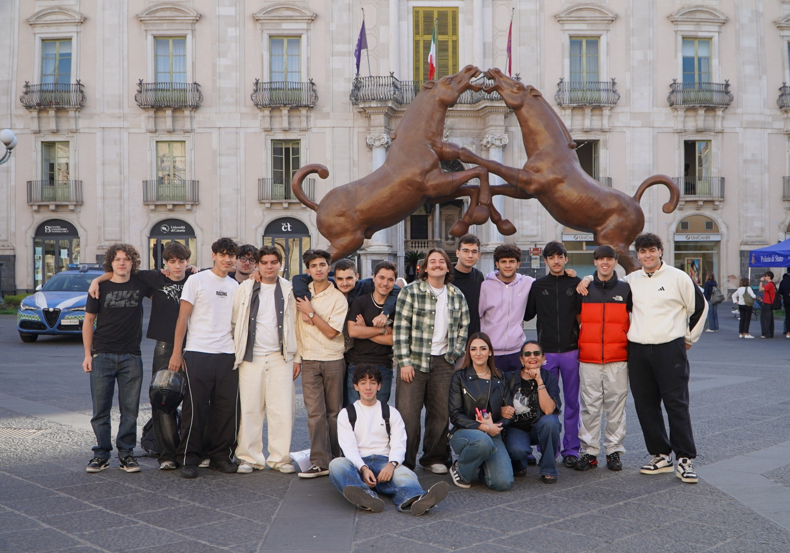
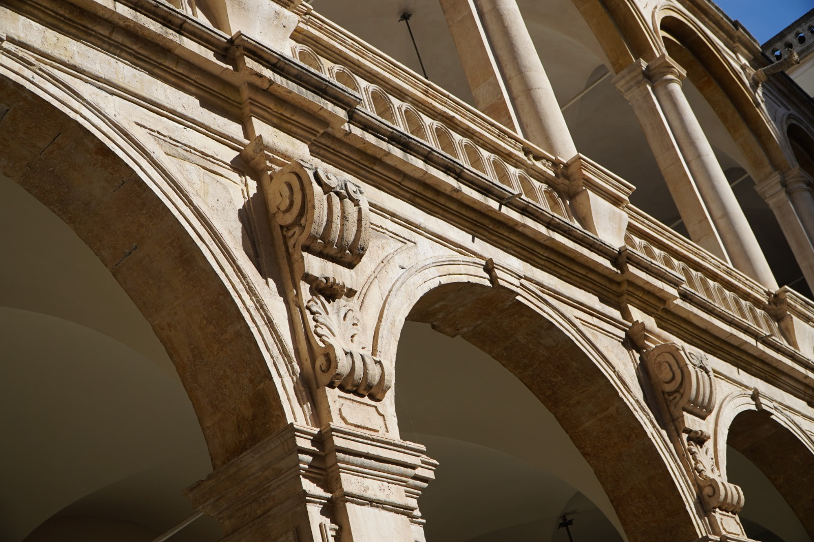

Un’esperienza di educazione civica
Profezie
per la Pace
Ascoltare il mondo attraverso le testimonianze di chi vive il conflitto.
Reportage realizzato da Mirko Andò,
Studente del 5° anno del IIS Marconi-Mangano
2026

Un incontro che
chiede ascolto.
[Inserire qui l’introduzione personale alla visita.]
Questo spazio è pensato per raccontare il contesto dell’iniziativa e il motivo per cui l’esperienza merita di essere condivisa.
Dentro il museo,
a Piazza Università.
[Descrivere qui la struttura che ha ospitato la mostra e l’esperienza dei visitatori, senza aggiungere dettagli non osservati direttamente.]

Lo spazio per la voce degli altri.” — citazione autentica da inserire
Una classe accompagna
il pubblico.
[Raccontare qui come gli studenti della scuola Spedalieri hanno accompagnato i visitatori attraverso la mostra.]
[Aggiungere le riflessioni personali nate durante la visita e gli aspetti che hanno colpito maggiormente l’autore.]
Le voci oltre
i confini.
Ogni testimonianza racconta una realtà che non può essere ridotta a un semplice dato geografico. I contenuti che seguono verranno presentati rispettando le parole, le fonti e il contesto in cui sono stati raccolti.
Layla Alsheikh e Robi Damelin
Layla Alsheikh, palestinese, e Robi Damelin, israeliana, hanno entrambe perso un figlio a causa del conflitto. Attraverso Parents Circle – Families Forum, un'organizzazione che riunisce famiglie israeliane e palestinesi colpite dalla perdita di persone care, testimoniano come il dialogo possa contribuire a interrompere il ciclo dell'odio e della vendetta.
Layla Alsheikh e Robi Damelin provengono da due comunità contrapposte, ma condividono la stessa esperienza: la perdita di un figlio a causa del conflitto israelo-palestinese. Entrambe fanno parte di Parents Circle – Families Forum (PCFF), un'organizzazione che riunisce oltre 800 israeliani e palestinesi che hanno perso familiari stretti a causa della guerra. Attraverso l'incontro, il dialogo e la riconciliazione, l'organizzazione cerca di dimostrare che è possibile spezzare il ciclo della vendetta. Layla Alsheikh racconta che, per lei, perdonare non significa dimenticare ciò che è successo, ma allontanare l'odio e la rabbia. Spiega di non aver mai pensato di vendicarsi per la morte di suo figlio: ha compreso che la vendetta non può cancellare la perdita e rischia, invece, di coinvolgere altre persone innocenti nella spirale della violenza. Robi Damelin riflette sul significato della giustizia e sulla possibilità di rinunciare alla vendetta. Si domanda se la giustizia consista necessariamente nel condannare per tutta la vita l'uomo che ha ucciso suo figlio. Afferma che, se liberare quell'uomo permettesse di riportare indietro un ostaggio, per lei sarebbe importante farlo, mettendo al centro la sacralità della vita umana. La sua testimonianza sottolinea che il perdono non cancella il dolore, ma richiede di trovare prima la pace con sé stessi.
Fonte / attribuzione: Profezie per la PacePadre Firas Lutfi
Padre Firas Lutfi racconta come, di fronte alla guerra e alla sofferenza degli innocenti, sia fondamentale passare dalla domanda «Perché accade tutto questo?» a «Come posso rendermi utile?». Attraverso l'aiuto reciproco e la fede, propone di abbattere la cultura della morte per costruire una cultura della vita, capace di alimentare la speranza e un futuro di pace.
Padre Firas Lutfi riflette sulle domande che sorgono di fronte alle tragedie della vita: le guerre, i terremoti, la morte degli innocenti e la sofferenza dei bambini. Spesso non esistono risposte capaci di spiegare completamente questi drammi. Per questo, secondo la sua testimonianza, è importante spostare l'attenzione dal «perché» al «come»: come posso rendermi utile davanti a questa sofferenza? Come posso mettere al servizio degli altri i talenti e i doni che ho ricevuto? È questo cambiamento di prospettiva che permette di trasformare l'impotenza in impegno concreto. L'obiettivo diventa abbattere la cultura della morte e costruire una cultura della vita, creando le condizioni per un futuro di pace. La fede e la preghiera rappresentano, nel suo racconto, una fonte di forza e speranza per affrontare le difficoltà senza lasciarsi sopraffare dalla disperazione."
Fonte / attribuzione: Profezie per la PaceBinan Kayyali
Binan Kayyali racconta come aiutare gli altri abbia contribuito anche alla guarigione di chi prestava aiuto. La rinascita non è un percorso individuale, ma collettivo: i sorrisi dei bambini, l'incoraggiamento dei genitori e il ritorno dei ragazzi a scuola hanno alimentato la speranza e permesso di ricostruire, gradualmente, i loro sogni.
Binan Kayyali sottolinea che aiutare gli altri ha contribuito a guarire anche chi si è impegnato nel sostegno delle persone colpite dalla sofferenza. Non si è trattato di un processo semplice né esclusivamente individuale, ma di un cammino collettivo, costruito attraverso la vicinanza e il sostegno reciproco. A dare la forza di continuare sono stati i piccoli segnali di cambiamento: il sorriso dei bambini, le parole di incoraggiamento dei genitori, l'evoluzione dei loro pensieri, il ritorno a scuola e la possibilità di vedere rinascere i loro sogni. Dopo anni di impegno condiviso, i risultati sono diventati visibili, anche se non immediatamente. La ricostruzione richiede tempo e non si compie in un giorno, in un mese o in un anno: il suo effetto può estendersi ben oltre il singolo individuo, coinvolgendo e trasformando l'intero ambiente in cui vive.
Fonte / attribuzione: Profezie per la PacePadre Michel Abboud
Padre Michel Abboud racconta l'impegno delle cliniche mobili in Libano, organizzate per raggiungere le persone che non possono accedere ai centri medici, come anziani e persone con disabilità. Attraverso il volontariato e la carità, i giovani offrono assistenza e scoprono nel servizio agli altri una fonte di entusiasmo e di fede.
Padre Michel Abboud descrive il lavoro di assistenza sanitaria rivolto alle persone più vulnerabili in Libano. I centri medici offrono visite, prescrizioni e medicinali gratuiti, ma non tutti riescono a raggiungerli: per alcune persone anziane e per quelle con disabilità, gli spostamenti sono difficili o impossibili, anche a causa della mancanza di mezzi di trasporto. Per rispondere a queste necessità sono state organizzate dieci cliniche mobili, distribuite nelle diverse zone del Paese. Ogni clinica raggiunge parrocchie e villaggi, portando l'assistenza direttamente alle persone, invece di aspettare che siano loro a recarsi nei centri medici. Padre Michel individua nello Spirito Santo una forza che anima la Chiesa e si manifesta concretamente nell'impegno dei giovani volontari. Molti di loro sono studenti universitari che, dedicandosi al servizio degli altri, ritrovano entusiasmo anche nel proprio percorso di studi. Secondo la sua testimonianza, chi sperimenta il dono di sé può vivere con una gioia più profonda, scoprendo una ricompensa che non è materiale, ma spirituale. Incontrare la sofferenza degli altri diventa così una grazia e un'occasione per riconoscere il valore della propria missione. Quando le persone assistite esprimono gratitudine, i volontari comprendono quanto la loro presenza possa fare la differenza. La fede si traduce quindi in gesti concreti di carità: aiutare chi si trova in difficoltà significa portare vicinanza, speranza e sostegno a chi ne ha più bisogno.
Fonte / attribuzione: Profezie per la PaceBwa Bwa Phan
Bwa Bwa Phan, rifugiata politica di etnia Karen fuggita dal Myanmar a 17 anni e oggi residente in Inghilterra, sostiene attraverso la Phan Foundation le comunità Karen, soprattutto nel campo dell'istruzione. Racconta di scuole trasferite nella giungla, lezioni svolte sotto gli alberi e ospedali privi di risorse essenziali. In questo contesto, la solidarietà tra le persone diventa una risorsa fondamentale per sopravvivere e mantenere viva la speranza.
Bwa Bwa Phan è una rifugiata politica di etnia Karen, fuggita dal Myanmar quando aveva 17 anni e oggi residente in Inghilterra. Attraverso la Phan Foundation sostiene le comunità Karen, in particolare nell'ambito educativo. Nelle zone colpite dal conflitto, le scuole sono state trasferite in luoghi considerati più sicuri, nella giungla. Le lezioni si svolgono sotto gli alberi e, vicino agli spazi utilizzati come aule, sono state scavate trincee nelle quali rifugiarsi in caso di bombardamenti. Anche gli ospedali sono stati allestiti nella giungla: qui Bwa Bwa Phan ha incontrato donne incinte costrette a camminare per ore per ricevere cure, in strutture dove mancano acqua potabile e forniture essenziali. I bisogni quotidiani sono enormi: cibo, vestiti, medicine, coperte e strumenti per cucinare. Eppure, nonostante le difficoltà, ciò che l'ha colpita maggiormente è la capacità delle persone di aiutarsi reciprocamente. Questa solidarietà rappresenta per lei una fonte di forza e speranza. Bwa Bwa Phan paragona il proprio impegno a una goccia nell'oceano, sottolineando però che, per chi ha una sete disperata, anche una sola goccia può significare tutto. L'aiuto fornito ha permesso di salvare vite, portare speranza e produrre cambiamenti concreti. Da qui nasce l'immagine di mille gocce che, unite, possono avere un impatto ancora più grande. Il suo lavoro è rivolto alla pace e non alla guerra: non promuove la violenza né l'odio e offre aiuto alle persone indipendentemente dalla loro etnia, comprese le comunità di etnia birmana presenti nella stessa regione. La sua testimonianza evidenzia come la resilienza della comunità e il sostegno reciproco siano essenziali per la sopravvivenza. In molti villaggi, infatti, le scuole continuano a funzionare sotto gli alberi, con trincee nelle vicinanze e sistemi di allerta condivisi. Poiché gli aiuti diretti dall'esterno sono quasi assenti, sono soprattutto le persone stesse a sostenersi a vicenda.
Fonte / attribuzione: Profezie per la PaceL'accoglienza che diventa casa
Dall'inizio della guerra, un gruppo di giovani orfani provenienti dall'Ucraina è stato evacuato e accolto in diverse strutture siciliane, tra cui Catania. Grazie all'incontro con studenti e volontari, le difficoltà iniziali e la diffidenza hanno gradualmente lasciato spazio all'amicizia, alla fiducia e alla possibilità di sentirsi nuovamente al sicuro. Le loro testimonianze mostrano come piccoli gesti quotidiani possano restituire un senso di famiglia a chi ha perso i propri punti di riferimento.
L'11 maggio, uno dei più grandi gruppi di orfani evacuati dall'inizio della guerra è arrivato in Italia dalle zone ucraine di Mariupol e Kramatorsk, nella regione di Donec'k, accompagnato da 21 educatori. Dopo un periodo trascorso a Leopoli, i ragazzi sono stati accolti in quattro strutture siciliane, a Trapani, Modica, Catania e Alcamo-Mira. A Catania, alcuni studenti universitari si sono impegnati nell'organizzazione di lezioni di italiano e di momenti quotidiani di condivisione. Le testimonianze dei ragazzi raccontano un percorso inizialmente difficile. Masha ricorda la diffidenza provata quando ha incontrato per la prima volta i volontari: non capiva perché fossero venuti nell'orfanotrofio e faticava a fidarsi degli altri. Le esperienze vissute in Ucraina avevano reso complicato stringere nuove amicizie. Il processo di accettazione e integrazione è stato graduale. Col tempo, però, la vicinanza dei volontari le ha permesso di sentirsi più tranquilla e di aprirsi alle persone. Masha racconta di sentirsi oggi al sicuro e di aver trovato degli amici. Non vorrebbe tornare in Ucraina, perché teme che il ritorno possa significare essere coinvolta nella guerra. Le piace trascorrere il Natale e la Pasqua nelle case dei volontari, dove può vivere un ambiente familiare. Non si definisce felice, ma fortunata per essere ancora viva. Pur non ricordando molto della sua vita in Ucraina, ricorda l'esperienza dell'accoglienza ricevuta. Anche Oksana racconta il cambiamento avvenuto nel tempo. All'inizio, la difficoltà di comunicare e le lezioni di italiano le rendevano antipatici i volontari. I primi giorni desiderava soltanto tornare in Ucraina. In seguito, le uscite insieme, in particolare le giornate al mare, hanno favorito la nascita di un legame e trasformato la diffidenza iniziale in amicizia. Oggi è felice di incontrare i volontari e di trascorrere del tempo con loro, perché in loro compagnia si sente bene. Per gli studenti e i volontari che si sono presi cura dei ragazzi, questa esperienza ha significato confrontarsi direttamente con le conseguenze della guerra. Il conflitto ha sottratto a bambini già privi della propria famiglia anche alcuni dei pochi punti di riferimento rimasti: gli educatori, il Paese d'origine e la lingua madre. Non potendo fermare la guerra né cancellare le ferite che ha lasciato, i volontari hanno scelto di restare presenti, dimostrando concretamente vicinanza e fedeltà anche di fronte alle difficoltà. Da questa esperienza hanno riscoperto il valore profondo della quotidianità e della condivisione. Uno sguardo, un sorriso, un gesto d'affetto o la capacità di far sentire qualcuno accolto e a casa possono sembrare azioni semplici, ma diventano fondamentali per chi ha perso quasi tutto. L'accoglienza non cancella il dolore della guerra, ma può offrire un luogo sicuro in cui ricominciare a costruire relazioni, fiducia e speranza.
Fonte / attribuzione: Profezie per la PaceLuigi Giussani
Se siamo così vinti, come facciamo a vincere?» Luigi Giussani riflette sulla divisione, sulla sfiducia e sul cinismo che impediscono agli uomini di ricostruire ciò che è stato distrutto. Di fronte a una società frammentata, propone l'incontro con qualcuno che venga dall'esterno e renda possibile ricominciare. La risposta alla sofferenza non è una formula, ma una presenza capace di generare comunione, speranza e pace.
Luigi Giussani parte da una domanda provocatoria: come possiamo vincere se ci sentiamo sconfitti, siamo profondamente divisi e non riusciamo più a fidarci gli uni degli altri? Quando anche i rapporti più fondamentali si spezzano e cresce il cinismo verso il mondo e verso noi stessi, diventa difficile trovare le basi per ricostruire ciò che è stato abbattuto. Per edificare nuove mura, sostiene, occorre che qualcuno venga dall'esterno e ci aiuti a ricominciare. Questa riflessione si collega al tema della sofferenza e alla possibilità di trovare una risposta che non sia semplicemente teorica. La risposta del Mistero alla sofferenza umana non è una formula astratta, ma una Presenza: qualcosa che si manifesta concretamente nella vita quotidiana e che permette di sperimentare la pace attraverso l'incontro con gli altri. La comunione e la condivisione diventano così occasioni per riscoprire la fraternità e riconoscere la dignità di ogni persona. Anche di fronte ai drammi più grandi, un gesto umano può rappresentare un segno di vicinanza e di speranza. L'incontro con Cristo, nella prospettiva della testimonianza, si inserisce nelle vicende della storia e nelle biografie personali, offrendo una possibilità di salvezza e di ricostruzione interiore.
Fonte / attribuzione: Profezie per la PaceGli spazi, i dettagli,
l’incontro.
Una raccolta di immagini della struttura, dell’allestimento e dell’esperienza. Le fotografie sono predisposte per essere sostituite con materiali autentici.
Quando l’educazione civica
esce dai libri.
[Inserire qui una valutazione personale e motivata dell’esperienza: la capacità comunicativa degli studenti, la qualità della presentazione, l’efficacia delle testimonianze e il valore didattico e umano della mostra.]
07 — Conclusione
Ciò che resta
dopo l’ascolto.
[Inserire qui il testo personale e riflessivo che chiude il reportage.]